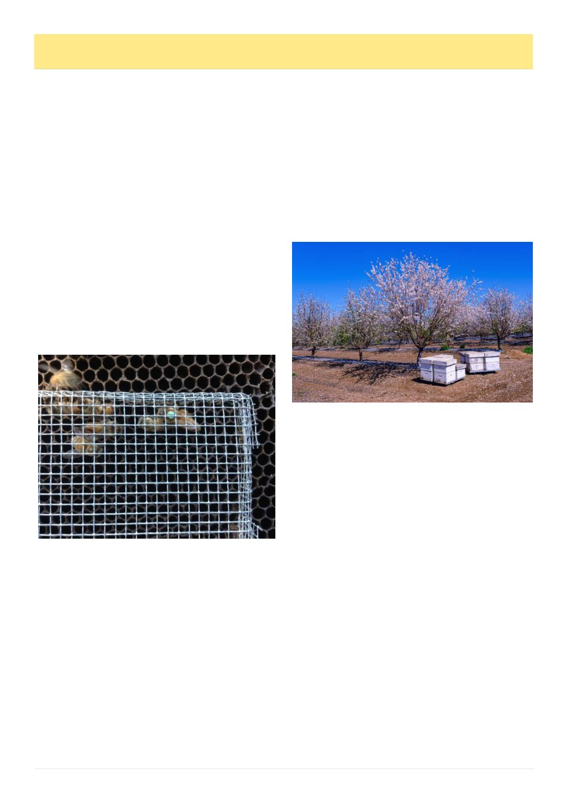

14
Australian Bee Journal
hives should be checked again after treatment. In high-
er-risk areas, mid-treatment monitoring is also sensible.
If mite counts are not falling, do not keep waiting and
hoping.
A possible winter or late autumn plan, where condi-
tions suit, is to remove honey supers, monitor mite lev-
els, then use Apiguard, Formic Pro, Api-Bioxal or
Aluen CAP according to the legal conditions and the
state permit situation.7,8,9,10,11 If brood is low, an oxalic
acid treatment may be particularly useful. If brood is
present and temperatures are within range, Formic Pro
may be a better fit.8 After treatment, wash again. A
treatment that is not measured is a guess.
A spring plan is more difficult. Colonies are ex-
panding, brood is increasing and pollination movements
are underway. In resistant-risk areas, spring mite
counts should not be allowed to drift high. If using for-
mic acid, temperature and colony strength must be
checked carefully.8 If using oxalic acid, consider
whether a brood break can be created first.10,11 Queen
caging, splitting, brood removal or a planned brood in-
terruption can make oxalic acid much more effective
because more mites are forced onto adult bees.
Mechanical methods will not replace legal treat-
ments, but they can help. Drone brood removal is one
useful method because varroa prefer drone brood. The
trap only works if it is removed before drones emerge.
Forgotten drone comb becomes a mite factory. Brood
breaks can be powerful when done deliberately and
combined with oxalic acid. Splitting colonies, caging
queens, removing capped brood or temporarily inter-
rupting laying can all reduce mite reproduction.
Screened bottom boards may remove some fallen mites,
but they are a support measure, not a primary treatment.
Good biosecurity also matters. Do not move weak
or collapsing colonies. Be careful buying nucs, packag-
es, queens or second-hand equipment. Monitor swarms
before uniting them with established colonies. Robbing
and drifting can spread mites locally, while hive move-
ments can spread them hundreds of kilometres. Clubs
should encourage members to report treatment failures
rather than hide them. Treatment failure is not a moral
failing. Silence is the problem.
The likely spread of resistant mites should be dis-
cussed honestly. Almond pollination and other spring
pollination events bring large numbers of hives togeth-
er, often from multiple districts, then send them home
again or on to other crops. Within those pollination
landscapes, drifting, robbing and close hive placement
can allow mites to move between colonies. After polli-
nation, hive movements can distribute those mites
across regions. Given the current evidence, it is realis-
tic to expect resistant mites to move significant distanc-
es within one pollination season.5,6 Where there are
large hive movements, spread should be thought of in
months, not years.
That does not mean every apiary will be overrun
immediately. It does mean beekeepers should stop
thinking of resistant varroa as somebody else‘s prob-
lem. A small recreational apiary can be affected by a
swarm, a drifting bee, nearby neglected colonies or a
nuc purchased from an unknown source. The mite does
not care whether the hive belongs to a commercial bee-
keeper or a backyard beekeeper.
The message for July is blunt. The easy phase of
varroa management is over before many beekeepers had
even learned it. Synthetic strips may still have a place
where testing and local advice show they remain effec-
tive, but they are no longer a dependable national
fallback. Recreational beekeepers need to monitor, rec-
ord, treat legally and verify results. Industry bodies
need to keep pressing for practical, science-based legal
options. Regulators need to move faster.
Australia cannot protect honey bees, pollination and
recreational beekeeping with a treatment cupboard that
is already half empty. Resistant varroa has exposed the
weakness. Now we need the courage to fix it.
References
1 NSW Department of Primary Industries and Regional De-
velopment, ―DPIRD advises pyrethroid resistant Varroa man-
agement‖, 16 Feb 2026. https://www.dpird.nsw.gov.au/about-
us/media-centre/releases/2026/general/dpird-advises-
pyrethroid-resistant-varroa-management
(Continued from page 13)
Resistant Varroa, Fewer Legal Tools And A Harder Road Ahead, cont’d
(Continued on page 16
Queen caging to force a Brood Break - Image unknown
Commercial pollination is essential but accelerates the
spread of mites and AFB